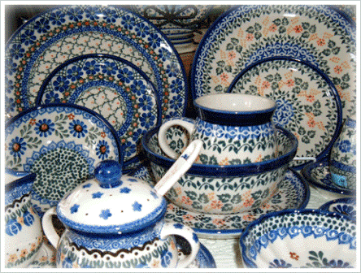
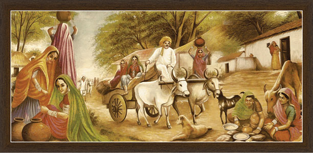

Rajasthan Arts and Crafts
Carpets and Dhurries

Floor coverings like carpets, hand-woven durries and namdas or soft woollen druggets of Rajasthan are exported all over the world. Available in all sizes, the dhurrie is woven in Jaipur and also in the rural areas of the state. Bikaner and Jaisalmer are known for woolen dhurries made of camel hair. Bikaner is also famous for its so-called jail carpets, which are so called for they were once made by the prisoners in the medieval times. Much like Persian carpets, Rajasthani hand-knotted carpets have geometric motifs and formal designs with a border and central motif. The motifs have indeed been localized and include peacocks and other local icons. Jaipur and Bikaner are believed to be the pioneer centres in carpet weaving.
Antiques

Not all of the items in the handicrafts shop that you find in Rajasthan can exactly pass off as antiques of course but still their distinctive color and designs make them popular among the tourists who buy them as souvenirs and as decorative items for their homes. The large iron oil jars painted in the pichwai style, depicting the love scenes, are just an example. Similarly, variety of kitchen utensils, votive objects and even camel saddles attract attention of the visitors.
Fabrics
Printed, dyed or embroidered fabrics of Rajasthan are known for their unique hues and tones of color. Block printing, batik, tie and dye has become a full-fledged artwork here. Each region has its own distinct motifs, choice of colors, and the way in which these colors are used. Bagru is known for earth colors and geometric patterns while Sanganeri clothes have bright colors and floral patterns. Barmer and Jaisalmer are famous for their batik or reverse printing work. Sikar and Jodhpur are famous for intricate tie-and-dye or bandhani designs including chunari (dotted), lahariya (diagonal striped waves) and mothra (large dots) prints. Bikaner, Sikar and Jhunjhunu are well known for the mirror work, embroidery and appliqué work that are used to embellish these fabrics to produce elaborate designs of Rajasthani dresses.
Furniture and wood carving
Rajasthan is an ideal place to look for old-worldly doors and windows, wooden jharokhas, tables with cast iron jaalis, side-boards, chairs, benches, jhoolas or swings and dressers, sometimes fretted with brass and copper sheets for decoration. They can be lightly carved or embellished with tiles. Jaipur and Ramgarh in Shekhawati are popular centers for furniture but Jodhpur gets the first place. The notable places are Shekhawati and Bikaner for traditional woodwork, Jodhpur and Kishangarh for painted wooden furniture, Shekhawati, Bikaner and Ramgarh for delicately carved wooden doors, Barmer for woodcarvings such as images of gods and goddesses, elephants, parrots, human and animal figures, Tilonia for leather-embroidered chairs of Tilonia and Shekhawati for carved-back, string-bottom chairs. The most remarkable and finest type of artwork belongs to Bikaner. Known as Gesso work, it is made using the inner hide of the camel, which is scraped till it is paper-thin and translucent and is then molded into various forms of lampshades, hip flasks, perfume phials or vases.
Pottery:
The different regions of Rajasthan have distinctive style of pottery. Jaipur is famous for its blue glazed pottery that doesn't use simple clay but ground quartz stone, fuller's earth and sodium sulphate.Terra-cotta pottery is also quite popular in Rajasthan. Molela, a village near Udaipur is specialized in making clay images of deities for ceremonial occasions. Alwar is known for its paper-thin pottery while Bikaner's painted pottery is tinted with lac colors. The white and red clay articles of Pokaran are marked with distinct geometric designs.
Leather ware:
In Rajasthan, jootis (the embroidered footwear the people wear), saddles, bags and pouches are not the only objects made out of animal skins. The other uses to which they are commonly put are making backs of chairs embroidered with woolen motifs. The leather is beaten, tanned and dyed and patterns are made on it by punching and gouging it. Later it is studded and sequined for effect, and embroidered and stitched to create the special jootis (slip-on shoes) that have become a style-statement. Jaipur and Jodhpur are famous for these 'jootis'.
Paintings
Miniature paintings, portraits, courtly paintings, murals, paintings on cloth and furniture, henna body art, domestic paintings and mandana (the art of decorating houses) are just of the various form of vibrantly colored and intricate Rajasthani paintings.Mostly the paintings depict scenes from Ramayana, Krishna Lila and the Gita Govindam and use rich colors that were made using minerals, vegetables, precious stones, conch shells and metals like gold and silver. Jaipur, Jodhpur, Nathdwara and Kishangarh are important centers of such paintings. Other remarkable styles are phads or scrolls with the tales of the folk-hero Pabuji and the pichwais of Nathdwara near Udaipur, that depict scenes from the with life of Lord Krishna and are often decorated with precious stones.
Puppets
Painted wooden heads, hands made simply by stuffing rags or cotton into the sleeve of the dress, with painted expressions, arched eyebrows, mustache for men and nose ring for women and large expressive eyes on their face, puppets are draped with dresses made from sequined old fabrics. They are extremely popular as inexpensive mementos among the tourists.